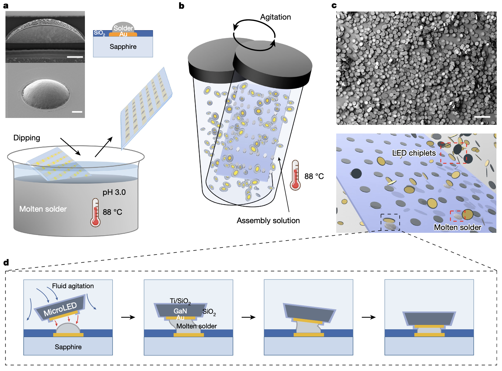

연구실 소개
Micro LED Transfer and MEMS Based on Fluidic Self-Assembly (FSA)
Our research focuses on the development of high-efficiency Fluidic Self-Assembly (FSA) techniques for the transfer of Red, Green, and Blue MicroLED chips. Key areas of investigation include:
- Efficient FSA using solder materials with different melting points: This approach enables selective bonding and precise alignment of MicroLED chips by leveraging the thermal properties of diverse solder compositions.
- FSA with solders of uniform melting points: Investigating uniform-temperature processes for scalable and simplified MicroLED integration.
- Capillary force-assisted FSA in microfluidic channels fabricated using PDMS: Utilizing soft lithography to create microfluidic environments that facilitate chip assembly through capillary interactions.
- Comparative analysis of FSA yield under varying pH conditions: Studying the influence of solution pH on assembly efficiency and yield optimization.
This research aims to advance scalable and reliable integration techniques for next-generation optoelectronic and MEMS devices.

최신 소식
- 2025-12-16: 홈페이지가 개설되었습니다.